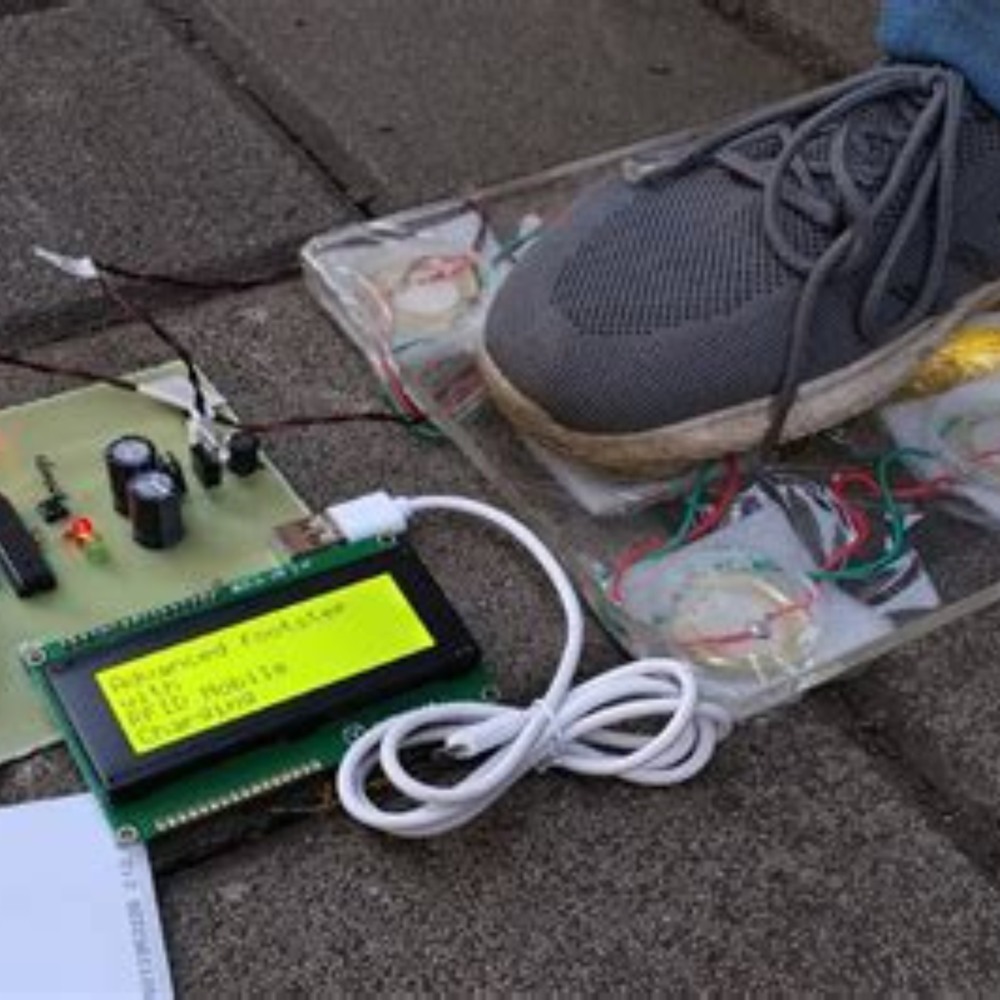
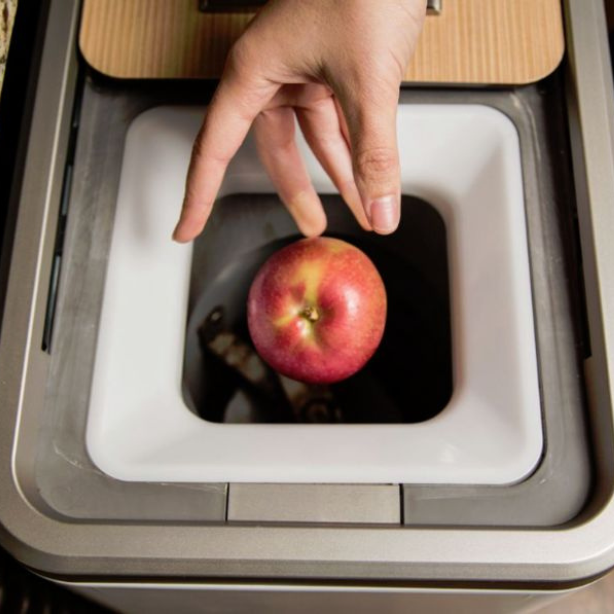
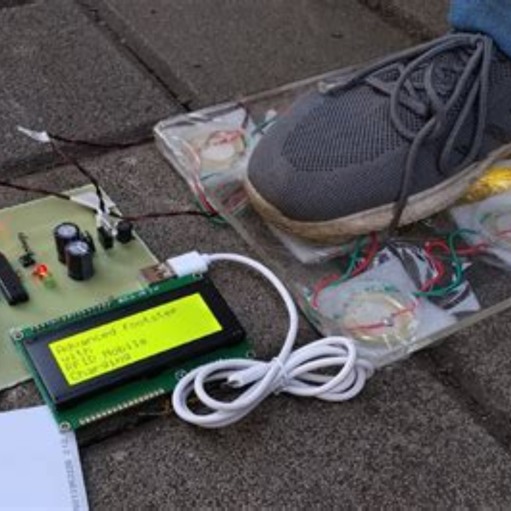
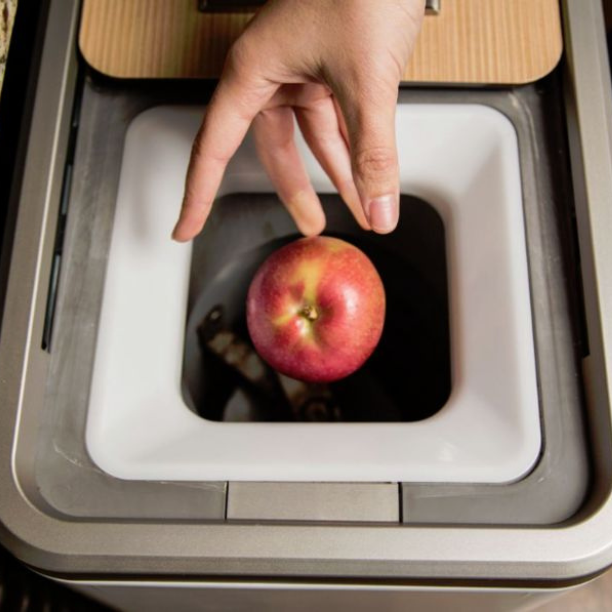

About Us
Our civilization's advancement has always been correlated with the destruction of nature. Technology is always considered as a tool to assist humans in doing their task, without weighing the impact of using them to other elements of nature. As such, many products that we use today are actually harming the environment, whether it is on production phase or when it is used. But, what if there is another way to integrate technology into the fabric of our society?
Nextworks Technologies is an electronics company that designs devices that are able to assist us in collaborating with nature. We use advanced technologies, such as internet of things and artificial intelligence, to equip humanity with the tools necessary to nurture our environment. We believe that technology can be used for good, both for humans and the world around them. Therefore, technology may be used to allow humans to coexist peacefully with their environment.

 


